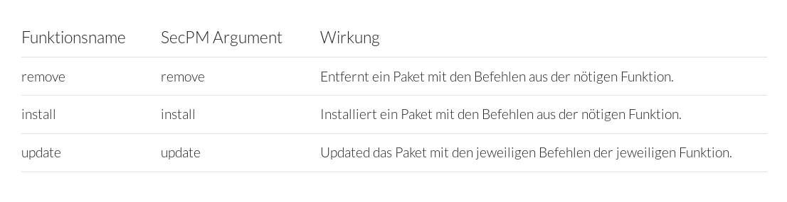

TSMI - Eine stackbasierte Programmiersprache
TSMI ist eine kleine interpretierte Programmiersprache, die in C++ geschrieben wurde. Die Sprache arbeitet mit einem Stapelspeicher (Sack) als Hauptspeicher, kann jedoch auch Variablen und Funktionen definieren.
Ein Beispiel:
Als erstes wird "Hallo Welt!" auf den Stack gelegt. Dann erkennt das Programm den Befehl "outl" und gibt das oberste Element des Stackes aus.
Heraus kommt dann am Ende ein "Hallo Welt!".
Schauen wir uns jetzt mal eine Funktion an:
Alles was in [] steht, wird als Code interpretiert. Diesen Code kann man nun in einer Variable speichern, die wir mit "print func" erstellen.
Als erstes wird also Code auf den Stack gelegt, dann der Name der Funktion und dann sieht der Interpreter das Keyword "func" und erstellt eine neue
Funktion namens "print" mit dem Inhalt "[ outl ]".
Führen wir diese Funktion nun aus:
[ outl ] print func
"Hallo" print !
Die Funktion ist definiert, jetzt führen wir sie aus. Erst legen wir "Hallo" auf den Stack, dann den Namen der Funktion "print". Das ! steht für das Keyword "run", welches damit abgekürzt wurde.
Dann wird also der Inhalt von "print" genommen und ausgeführt. Am Ende steht also das da:
[ outl ] print func
"Hallo" [ outl ] !
Das "print" wurde also ersetzt und der Code, den wir vorher angelegt haben wird ausgeführt. Der Interpreter macht daraus also:
"Hallo" print ! -> "Hallo" [ outl ] ! -> "Hallo" outl
Und am Ende steht "Hallo" auf der Konsole.
Ein bisschen schönerer Code:
[
outl
] print func
"Hallo" print!

SecPM - Paketverwaltung auf Linux für GitHub
SecundoPM/SecPM ist der Nachfolger zu TRICL und ein ausgesprochen guter und einfach zu benutzender Paketmanager.
Um ihn zu nutzen muss er einfach nur heruntergeladen und mit GCC/G++ kompiliert werden. Danach reicht ein einfaches "./secpm install secundo-pm". Auf Windows Läuft der Paketmanager zwar auch, es ist jedoch nicht empfohlen in zu benutzen.
Ich übernehme keine Verantwortung für aufkommende Schäden.
Ein Beispiel für ein Installer-Script:
func install
{
echo "Dieser Shellbefehl wird beim Installieren ausgeführt."
}
func remove
{
echo "Dieser Shellbefehl wird beim Entfernen des Paketes ausgeführt."
}
func update
{
echo "Ich rufe die Funktion install auf!"
&install
}
Wird dies in die Installer-Datei (in der GitHub Repo in pkg/ins.sc) geschrieben und das Paket mit "secpm user [GitHub Username] install [Repo Name]", so wird beim installieren nun "Hallo Welt" ausgegeben. Pakete können natürlich so erstellt werden. Es werden einfach die nötigen Shell-Befehle in die Datei eingetragen.
